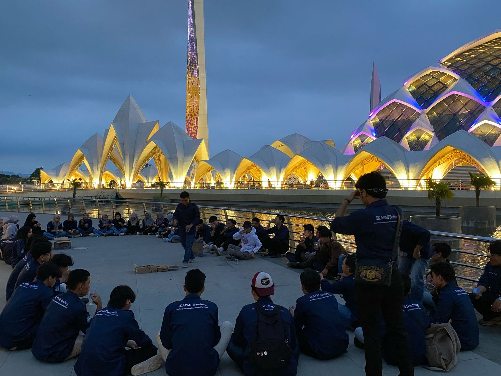
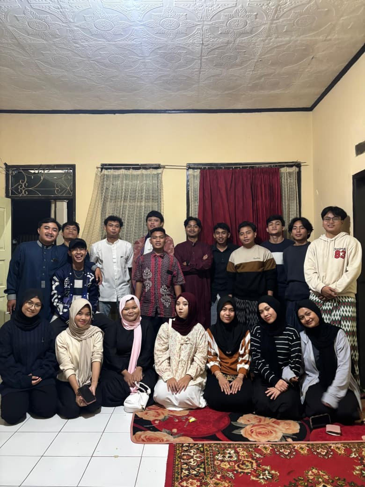
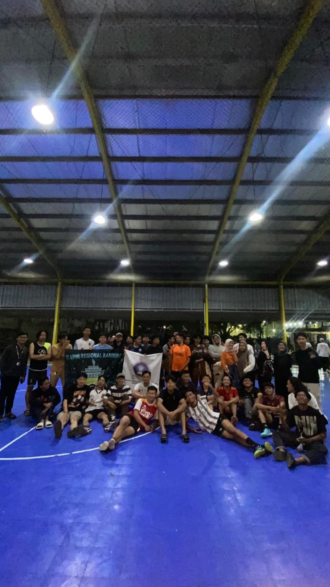
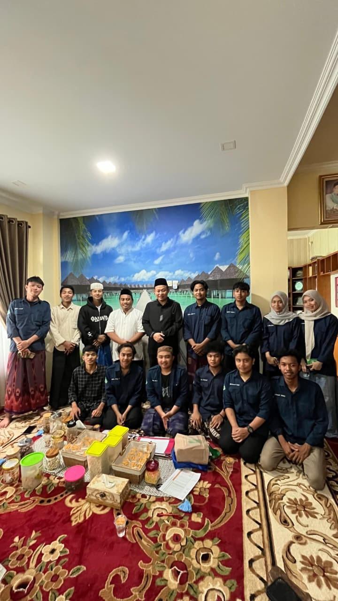
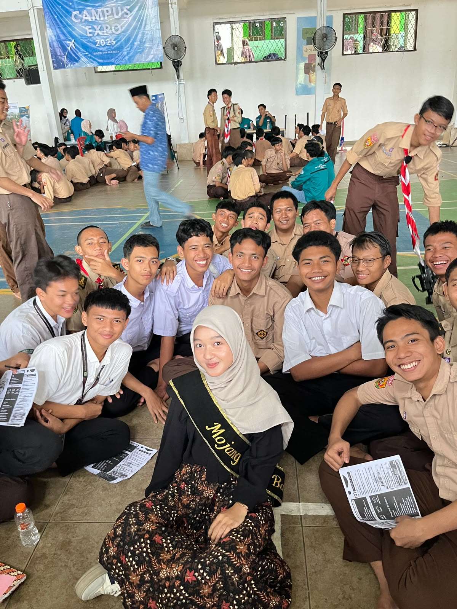
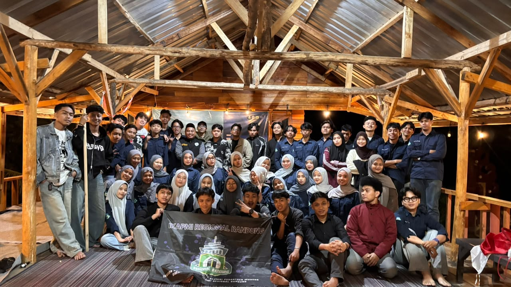

Pilihan Editor
Agenda Ramadhan
·
Kebersamaan
Wadah silaturahmi & jejaring alumni Pesantren Modern Ummul Quro Al-Islami (PMUQI) di Regional Bandung.
300+
Alumni Terhubung
10+
Kampus di Bandung
18 Tahun
Berdiri
5 Tahun
Penghargaan IKAPMI Terbaik
IKAPMI Regional Bandung adalah simpul keluarga bagi alumni Pesantren Modern Ummul Quro Al-Islami (PMUQI) yang menempuh studi maupun berkarier di wilayah Bandung Raya.
Berlandaskan semangat "Sadulur Ngahiji", kami hadir sebagai ruang silaturahmi, bertukar gagasan, serta saling menguatkan layaknya saudara di perantauan.
Pesantren Modern Ummul Quro Al-Islami Bogor & Pengurus Pusat IKAPMI
Pimpinan Pesantren Modern Ummul Quro Al-Islami Bogor


Pimpinan Pesantren Modern Ummul Quro Al-Islami Bogor
Ahlul Bait Pesantren Modern Ummul Quro Al-Islami Bogor


Ahlul Bait Pesantren Modern Ummul Quro Al-Islami Bogor
Ketua Umum Pengurus Pusat IKAPMI

Periode 2026
Jalur masuk kampus, kost, beasiswa, dan narahubung untuk santri PMUQI yang ingin kuliah di Bandung.
Pilih kampus untuk melihat jalur masuknya.
Jejaring alumni santri Ummul Quro Al-Islami tersebar di berbagai universitas terkemuka di wilayah Bandung Raya. Temukan koordinator kampus Anda.

Kampus 1 & 2 Cibiru, Kota Bandung. Konsentrasi alumni di Fakultas Ushuluddin, Syariah, Tarbiyah, dan Dakwah.

Jatinangor & Dipatiukur. Konsentrasi alumni di Fakultas FIB, FISIP, Fikom, Hukum, dan Ekonomi Bisnis.

Bumi Siliwangi Setiabudi, Bandung. Konsentrasi alumni di Fakultas FPIPS, FPBS, FIP, dan Pendidikan Bahasa.

Ganesha & Jatinangor. Konsentrasi alumni di Fakultas STEI, FTMD, SBM, FTSL, dan Seni Rupa Desain.

Dayeuhkolot, Bandung Selatan. Konsentrasi alumni di Fakultas Informatika, Ekonomi Bisnis, dan Ilmu Komunikasi.
Coba gunakan kata kunci lain seperti nama kampus (UNPAD, UPI, ITB, Telkom, Unisba) atau nama jurusan (Informatika, Kedokteran, Hukum, Dakwah).

Tamansari, Lengkong, dan Ciwaruga. Jejaring santri PMUQI di Kedokteran, Ilmu Hukum, Teknik, dan Akuntansi.
IKAPMI SPATIAL ARCHIVE
Koleksi dokumentasi visual perjalanan keorganisasian, musyawarah, temu keakraban, dan rekam jejak dinamika santri Ummul Quro Al-Islami di Bandung Raya.
Agenda, rilis resmi organisasi, dan refleksi dari anggota IKAPMI Regional Bandung.







Bagi seluruh alumni Pesantren Modern Ummul Quro Al-Islami yang menempuh studi, berkarier, atau berdomisili di Bandung Raya, silakan daftarkan data Anda pada halaman pendataan khusus alumni untuk memudahkan koordinasi dan silaturahmi.
Data dijaga kerahasiaannya dan hanya digunakan untuk kepentingan internal IKAPMI Regional Bandung.
LAYANAN SEKRETARIAT
Pintu sekretariat kami senantiasa terbuka untuk silaturahmi, konsultasi adik santri, maupun kolaborasi kemitraan dan sosial.
Jl. A.H. Nasution No. 105, Cipadung, Kec. Cibiru, Kota Bandung, Jawa Barat 40614
Titik Kumpul: Kawasan Bandung Timur (Dekat Kampus UIN)
